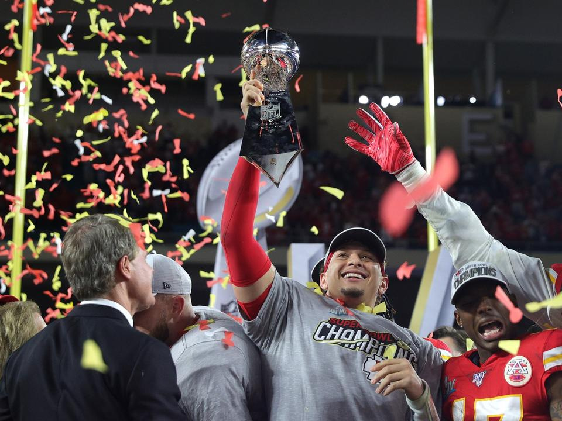

A Super Bowl LIV-t a National Football League (NFL) 2019-es szezonjának bajnokságában játszottak. Az
American Football Conference (AFC) bajnoka, a Kansas City Chiefs 31-20-ra legyőzte a National Football
Conference (NFC) bajnokát, a San Francisco 49erst. A mérkőzést 2020. február 2-án játszották a floridai
Miami Gardensben található Hard Rock Stadionban. Ez volt a tizenegyedik Super Bowl, amelynek a
dél-floridai régió adott otthont, és a hatodik Super Bowl, amelynek Miami Gardens adott otthont, amely
tíz évvel korábban a Super Bowl XLIV-nek adott otthont.
A mérkőzés rövid összefoglalója
Az első félidő parázs összecsapást hozott a két csapat között, a félidőben 10 pontos döntetlen volt az
állás. A harmadik negyedben a 49ers kezdett elhúzni, Robbie Gould mezőnygóljával és Raheem Mostert
touchdown-futásával 20-10-es vezetést szereztek a negyedik negyedre. A mérkőzés 6:13 percében azonban a
Chiefs támadójátéka két touchdown drive-ot fejezett be Mahomes touchdown-passzaival Travis Kelce-nek és
Damien Williamsnek, így a kétperces figyelmeztetés előtt átvették a vezetést. A Chiefs ezután
védekezésben megállította a 49erst, és Damien Williams késői touchdown-futása, valamint Kendall Fuller
interceptionje megpecsételte a győzelmet, és véget vetett a Chiefs 50 éves bajnoki aszályának. 42
passzkísérletből 26-ot teljesítve 286 yardot, két touchdownt és két interceptiont szerzett, valamint 29
yardot és egy touchdownt futott, amivel Patrick Mahomes lett a Super Bowl MVP-je.
Mahomes 42 kísérletből 26 sikeres passzal 286 yardot ért el, két touchdownnal és két interceptionnel,
miközben 29 yardot és egy touchdownt futott, amivel elnyerte a Super Bowl legértékesebb játékosának
(MVP) járó díjat. Terry Bradshaw-hoz és Tom Brady-hez csatlakozott, mint az egyetlen olyan irányító, aki
több interception dobása ellenére is elnyerte az MVP-t. Emellett ő lett a valaha volt legfiatalabb
játékos, aki 24 évesen és 138 naposan elnyerte a díjat.
További figyelemre méltó statisztikai teljesítményei közé tartozott Hill kilenc elkapása 105 yardért és
Watkins öt elkapása 98 yardért. Williams volt a meccs legjobb futója 17 futással 104 yardért és egy
touchdownért, miközben négy passzt is elkapott 29 yardért és egy újabb touchdownért. A San Francisco
részéről Garoppolo 31 passzból 20-at teljesített 219 yardért és egy touchdownért, két interception
mellett. Samuel három futással 53 yardot ért el, ezzel beállította a Super Bowl rekordját az elkapók
által futott yardok számában, és öt passzt is elkapott 39 yardért.
Ezzel a győzelemmel a Kansas City lett az első NFL-csapat, amely egy szezonban három rájátszásbeli
mérkőzésen is 10 pontos (vagy annál nagyobb) hátrányból fordított. A Chiefs Super Bowl-győzelmével
lezárult egy tízéves sorozat is, amelyben a négy nagy amerikai sportbajnokságban minden jelenlegi
missouri székhelyű csapat nyert bajnoki címet (csatlakozva a St. Louis Cardinalshoz, amely 2011-ben
megnyerte a World Series-t; a Kansas City Royalshoz, amely 2015-ben megnyerte a World Series-t; és a St.
Louis Blueshoz, amely 2019-ben megnyerte a Stanley Kupa döntőjét). Emellett a Sporting Kansas City,
Kansas City Major League Soccer franchise-a 2013-ban megnyerte az MLS Kupát.

Patrick Mahomes a magasba emeli a Lombardy trófeát